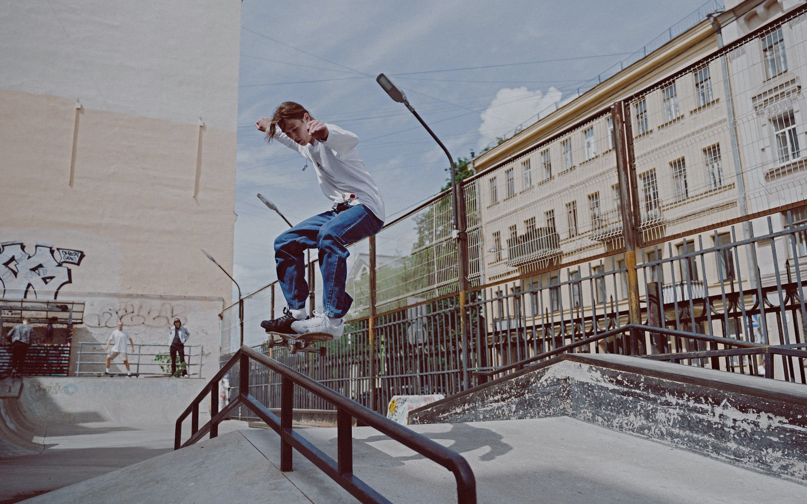
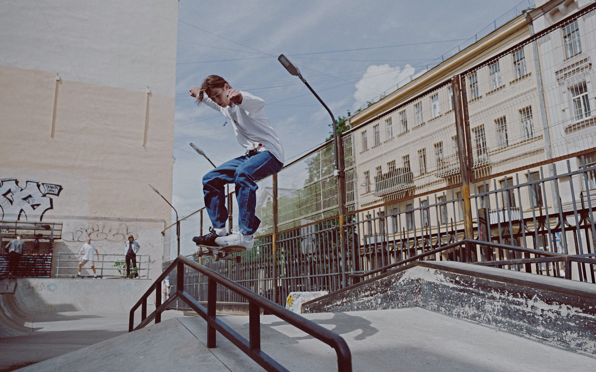

Street
La disciplina Skate Street utiliza una combinación de obstáculos que pretende reflejar, a grandes rasgos, la arquitectura urbana sobre la que se creó este deporte: escaleras, barandillas, cornisas, bancos, etc.
La disciplina Skate Street utiliza una combinación de obstáculos que pretende reflejar, a grandes rasgos, la arquitectura urbana sobre la que se creó este deporte: escaleras, barandillas, cornisas, bancos, etc.
El Skate Bowl está basado en la transición. Sus skateparks intercalan bowls (¡generalmente de hormigón duro como la roca!). En pocas palabras, imagina una serie de piscinas vacías donde se realizan trucos aéreos y sobre sus bordes. El Skate Bowl está basado en la transición. Sus skateparks intercalan bowls (¡generalmente de hormigón duro como la roca!). En pocas palabras, imagina una serie de piscinas vacías donde se realizan trucos aéreos y sobre sus bordes.